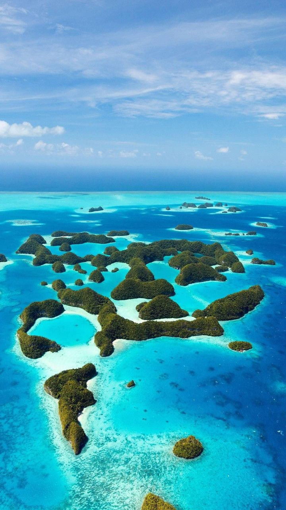

深海探索之旅
潛入藍色秘境，探索神秘海底世界
讓每一次呼吸都成為與海洋的對話
0
已知海洋物種
0
最深海溝(公尺)
0
地球海洋覆蓋(%)
神奇海洋生物圖鑑
點擊生物查看詳細資訊
鯨鯊
Rhincodon typus - Whale Shark
鯨鯊是目前世界上最大的魚類，體長可達20公尺。儘管體型龐大，鯨鯊卻以浮游生物和小魚為食，性情溫和。牠們獨特的斑點花紋如同指紋般獨一無二，科學家藉此追蹤識別個體。
最大體長
18-20 公尺
分布區域
熱帶與溫帶海域
綠蠵龜
Chelonia mydas - Green Sea Turtle
綠蠵龜是大型海龜的一種，名字來自於體內脂肪的顏色而非外表。牠們是極少數成年後以海草和藻類為主食的海龜，對維持海洋生態平衡有重要作用。
壽命
80-100 年
潛水深度
可達 200 公尺
月亮水母
Aurelia aurita - Moon Jellyfish
月亮水母因其透明圓盤狀傘體而得名，在水中隨波漂流的姿態如夢似幻。雖然沒有大腦、心臟和血液，卻已在地球上生存超過5億年，是最古老的多器官生物之一。
身體組成
95% 水分
毒性
輕微刺痛感
大章魚
Enteroctopus dofleini - Giant Pacific Octopus
太平洋巨型章魚是最聰明的無脊椎動物之一，擁有三顆心臟和藍色的血液。牠們能在數秒內改變身體的顏色和紋理以進行偽裝，並能解開容器蓋子和走迷宮。
心臟數量
3 顆心臟
觸手吸盤
約 2000 個
小丑魚
Amphiprioninae - Clownfish
小丑魚因電影《海底總動員》而聞名全球，牠們與海葵形成獨特的共生關係。小丑魚身上的黏液可保護自己免受海葵毒刺傷害，同時為海葵帶來食物並驅趕掠食者。
共生夥伴
海葵
特殊能力
性別轉換
蝠鱝
Mobula birostris - Manta Ray
蝠鱝是海洋中最優雅的生物之一，展開雙翼可達7公尺寬，在水中如同飛翔的巨鳥。牠們擁有魚類中最大的腦身比，被認為具有自我意識，是潛水員夢寐以求的邂逅對象。
翼展寬度
最大 7 公尺
食物
浮游生物
深度探索器
點擊深度，探索不同海洋層的奧秘
選擇深度
探索海洋層
選擇上方深度計的深度，探索該海洋層的生物與特點
世界潛水勝地
精選全球最夢幻的水下天堂
馬爾地夫
📍 印度洋群島
由1200多個珊瑚島嶼組成的天堂，擁有世界上最清澈的海水。在這裡你可以與蝠鱝共游、穿梭於色彩繽紛的珊瑚礁之間，體驗夜潛時螢光珊瑚的夢幻景象。
能見度
30-50m
水溫
27-30°C

大堡礁
📍 澳洲昆士蘭
世界最大的珊瑚礁系統，綿延2300公里，是唯一從太空可見的生物結構。擁有超過1500種魚類和400種珊瑚，是潛水員此生必訪的聖地。
長度
2,300km
魚類種類
1,500+種

帛琉
📍 西太平洋密克羅尼西亞
被譽為「潛水者的麥加」，藍角是全球知名的放流潛點。水下能見度極高，鯊魚、蝠鱝、海龜隨處可見，還有獨特的水母湖可以與無毒水母共游。
特色
鯊魚城
獨特景點
水母湖

科莫多島
📍 印尼
以科莫多龍聞名，水下世界同樣精彩。強勁的海流帶來豐富營養，吸引蝠鱝群聚。粉紅沙灘與藍色海水形成絕美對比，是攝影愛好者的天堂。
特色
強流放流
必看
蝠鱝群